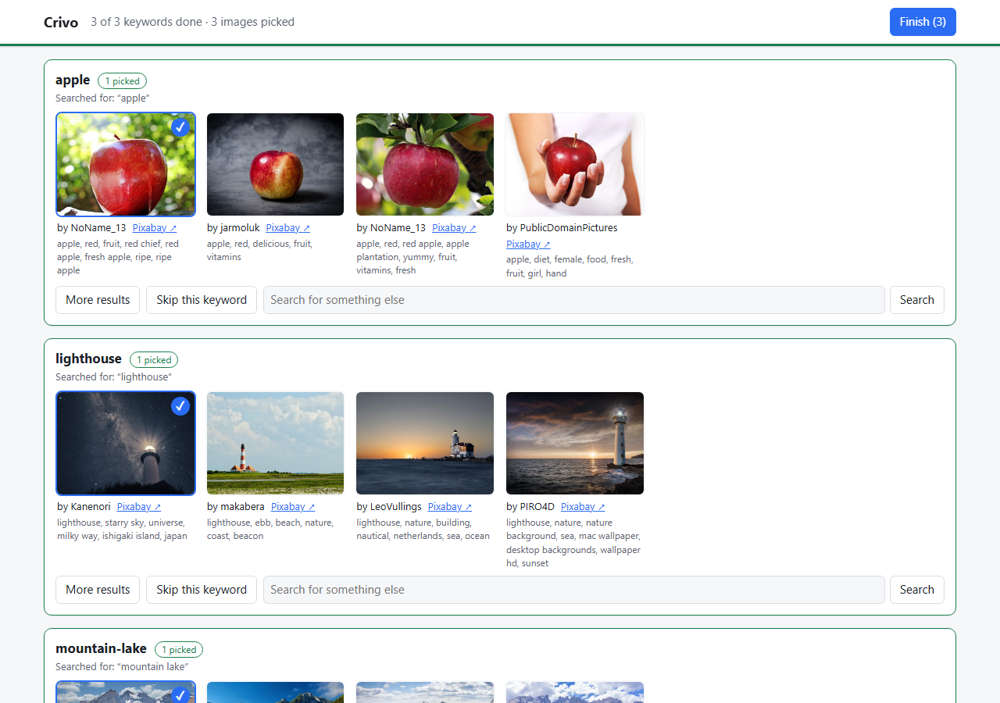

-k on the command line, or a box on the page to paste your list into.CREDITS.txt naming every contributor.$ crivo run examples/keywords_sample.txt --size 256
Searching 12 keywords on Pixabay...
1 / 12 apple
...
12 with results
Pick your images at http://127.0.0.1:52431/?t=...
Downloading 11 images...
Wrote keywords_sample_2026-10-19_14-30.zip with 11 images for 11 keywords, plus CREDITS.txt.
Every image shows its contributor's name and a link to its Pixabay page.
Write label | search term. This line gives you hot-dog.png, found by searching for "hot dog":
hot-dog | hot dogBlank lines and lines starting with # are ignored.